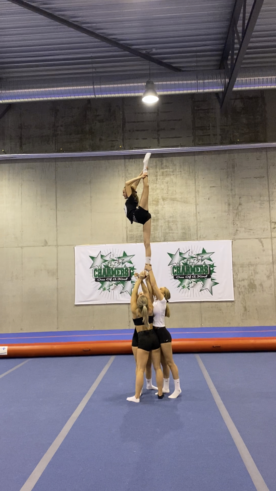

Her er en liste over de ulike øvelsene i en cheerleading-rutine:
Det vanligste er at fire personer stunter sammen. En person er på toppen (flyer). En person en bak (bakbase). To personer er under flyeren på siden (baser). Det finnes flere typer stunt man gjør. Noen eksempler er når flyeren spinner rundt, tar en salto til hendene til basene, gjør ulike posisjoner i luften (se bilde nederst) eller bytter ben i luften. Det er ofte fem stuntegrupper på et lag. Dersom man går på et coed lag, er det normalt at 1 eller 2 gutter løfter en jente alene.
Pyramider varierer utifra om du er level 6 eller ikke. På level 6 kan man bygge tre personer i høyden. Da står ofte en person på skuldrene til en annen. Oppå der igjen står det en siste person, som bli kastet opp. Noen ganger tar flyeren en salto opp eller kansje en flikk flakk. Det finnes uendelig med muligheter. På level 1,2,3,4 og 5 er det ikke lov med tre personer i høyden, så på disse levelene går pyramidene ut på at man holder i hverande og gjør øvelser.
Kast varierer også utifra hvilkt level du er på. Tre eller fire personer kaster 1 person opp i luften. På level 6 kan flyeren ta skrusaltoer, doble skrusaltoer og egentlig nesten gjøre hva som helst i luften. På level 1,2,3,4 og 5 er det ikke lov med saltoer i kast. På level 1 og 2 kan bare flyern bli kastet rett opp uten å gjøre noe i luften. På level 3,4 og 5 kan flyeren twiste rundt og plitte bena for eksempel.
Turn er en del av alle cheerleading rutiner. Desto høyere level du er på, desto vanskeligere turnelementer kan du gjøre. Flikk flakk og saltoer er de valigste elementene.
Dans blir en mindre og mindre del av cheerleading rutiner. I Norge har man nesten slutten med dans, men det er for eksempel fortsatt vanlig i USA. Dansen går ut på at man gjør ulike bevegelser rett etter hverandre. Bevegelsene er sharpe, tydelige og går fort.
